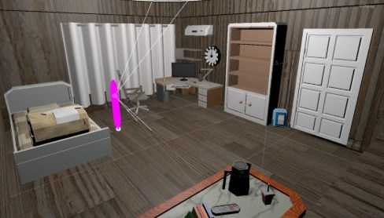

Echoes — room scene · Unity
Portfolio · 2026
Bharat Vyas
I design interactive systems, playable worlds and research-led experiences.

Echoes — room scene · Unity
Portfolio · 2026
I design interactive systems, playable worlds and research-led experiences.